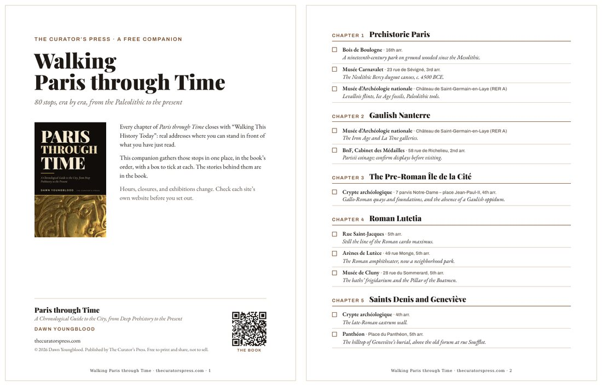

Free companion
Walking Paris through Time
80 stops, era by era, from the Paleolithic to the present
Every chapter of Paris through Time closes with “Walking This History Today”: real addresses where you can stand in front of what you have just read. This free eight-page companion gathers all of them in one place, in the book’s order, from the Neolithic canoes of Bercy and the Arènes de Lutèce to the Seine’s new bathing sites, with a box to tick at each stop.

Send Me the Free Companion
Or write to editor@thecuratorspress.com with “Walking Paris through Time” in the subject line. We send the PDF by return email.